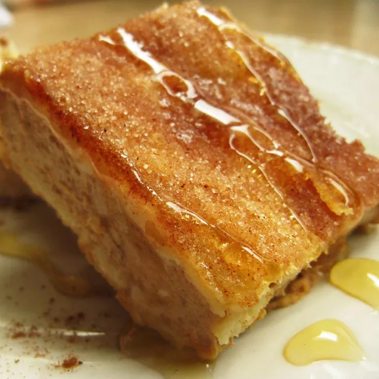

Sopapilla Recipe

Description
Sopapilla Cheesecake is an easy recipe with layers of sweet cream cheese, crescent dough, and a cinnamon sugar layer. This is the perfect ending to your Mexican dessert.
Prep Time:
15 mins
Additional Time:
2 hrs
Total Time:
3 hrs
Servings:
12
Yield:
1 - 9x13 inch cheesecake
Ingredients
- 3 (8 ounce) packages cream cheese, softened
- 1 ½ cups white sugar
- 1 ½ teaspoons vanilla extract
- 2 (8 ounce) cans crescent roll dough
- ½ cup melted butter
- ½ cup white sugar
- 1 teaspoon ground cinnamon
- ¼ cup sliced almonds
Directions
- Preheat an oven to 350 degrees F (175 degrees C).
- Beat the cream cheese with 1 1/2 cups of sugar, and the vanilla extract in a bowl until smooth. Unroll the cans of crescent roll dough, and use a rolling pin to shape the each piece into 9x13 inch rectangles. Press one piece into the bottom of a 9x13 inch baking dish. Evenly spread the cream cheese mixture into the baking dish, then cover with the remaining piece of crescent dough.
- Drizzle the melted butter evenly over the top of the cheesecake. Stir the remaining 1/2 cup of sugar together with the cinnamon in a small bowl, and sprinkle over the cheesecake along with the almonds.
- Bake in the preheated oven until the crescent dough has puffed and turned golden brown, about 45 minutes. Cool completely in the pan before cutting into 12 squares.